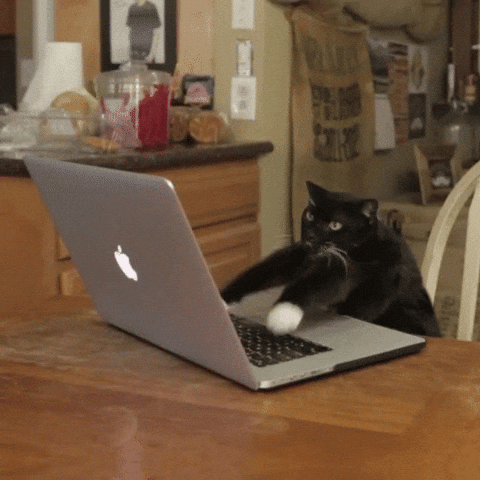
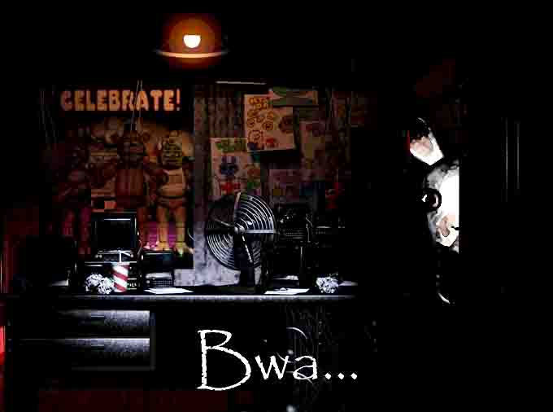

Meme Art!
This is the page for my Meme Art work done in my Art 74 class at SJSU!

Below you'll see the meme I made for the assignment and some of my thoughts I had during the creation of it!!
My Work!

I found this assignment to be very fun to do! I had never made a meme beforehand so my thought process was looking towards memes I found to be funny and think about what exactly made them funny to me. I realized that a lot of humor is found from the crossover of pop culture since it is absurd and not normally seen. I also thought that editing the original images brings about a sort of intrigue and funniness from them. Overall a fun project and process!